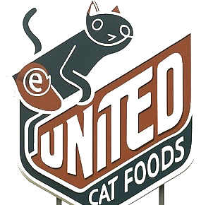

Premium Cat Nutrition
Station-safe meals calibrated for long-duration orbital life.

United Cat Foodsユナイテッド・キャットフーズ / Orbital Cat Care Network
United Cat Foods maintains cat cafés, feline interaction lounges, premium nutrition systems, and water logistics for deep-space habitats where people still need warmth, routine, and purring company.
Mission
Our work is practical: move food, move water, maintain habitats, and keep trained live cats healthy for human interaction inside future space stations.
Station-safe meals calibrated for long-duration orbital life.
Quiet, supervised social rooms for crew restoration and morale.
High-reliability water delivery for cats, cafés, and human service zones.
Operations
Food, litter, medical supplies, enrichment equipment, and water moved through climate-controlled cargo routes.
Live-cat interaction spaces designed for station residents, visitors, and off-duty crew under calm behavioral protocols.
A secondary business line supplying sealed water systems for café operations and deep-space hospitality.
Facilities
U.C.F. is building the future cat café: a warm, low-light room on the edge of a station where humans and cats find each other across the cold of space. A place to sit with a cup of something hot, hear a deep purr against the hum of the habitat, and remember that the universe is still kind in small rooms.
Station Onboarding
For orbital cafés, feline logistics, water service, and long-duration human interaction programs.